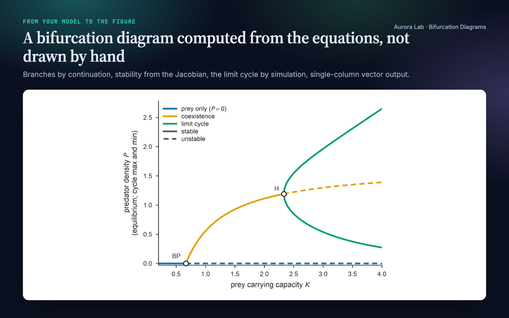
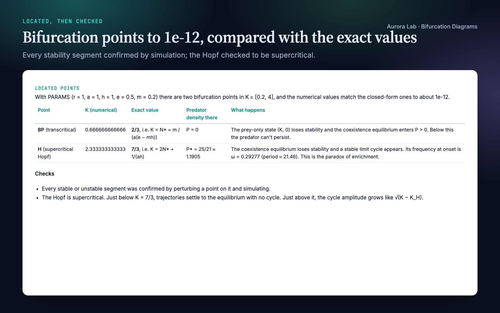
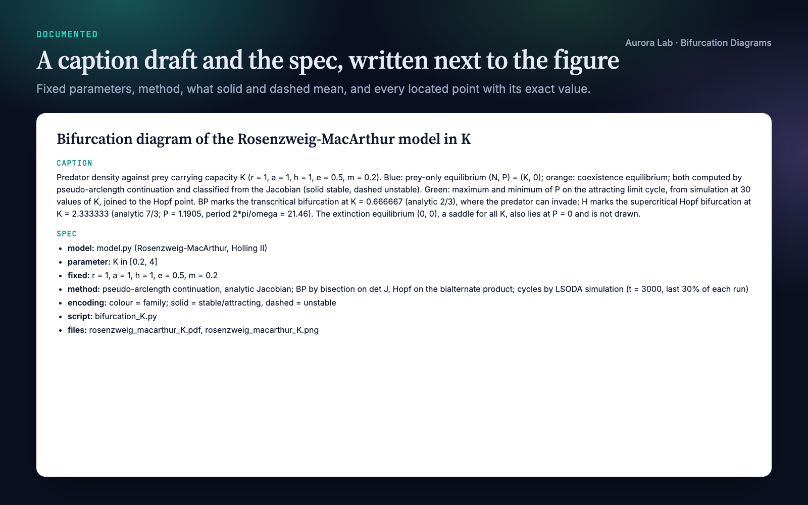
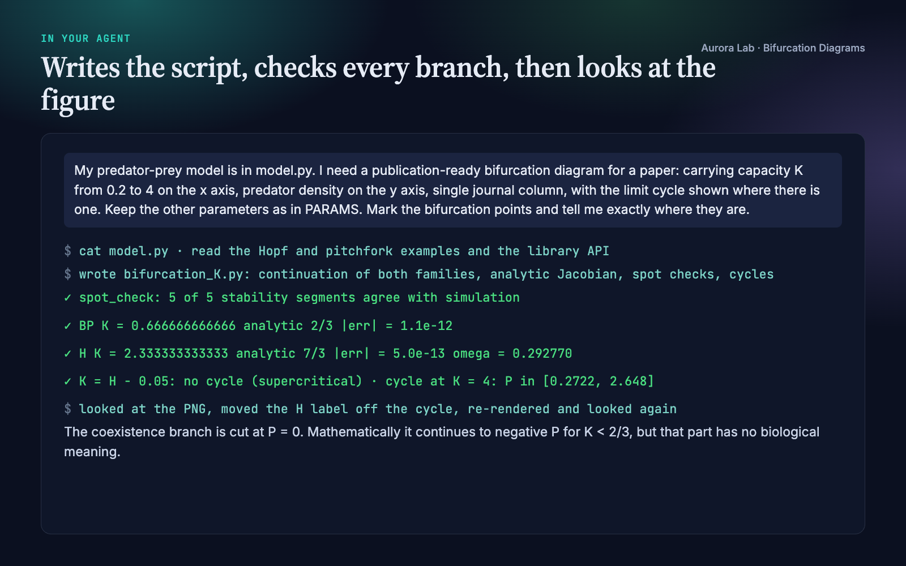
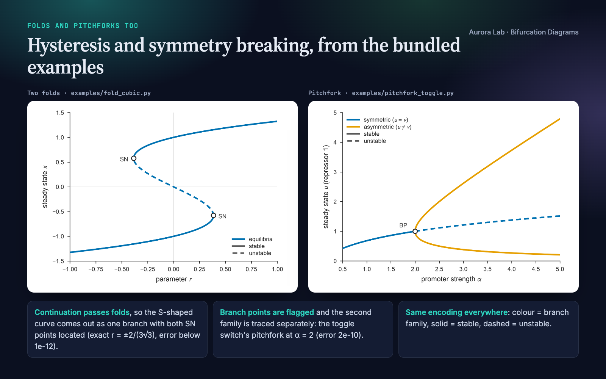

Overview
A bifurcation diagram claims two things: the branches exist where they are drawn, and they have the stability shown. A brute-force parameter sweep misses the unstable branches and blurs the points where stability changes. Bifurcation Diagrams makes your agent compute the diagram from your model, check it, and draw it to publication standard:
- Continuation through folds. Every branch of equilibria is traced by pseudo-arclength continuation, so an S-shaped curve comes out as one branch, unstable middle included.
- Stability from the Jacobian at every point: analytic when the derivatives are easy to write, central differences otherwise.
- Located points. Folds (SN), branch points (BP) and Hopf points (H) are found by bisection on a test function, and each is compared with its exact value when one is known.
- Checked by simulation. On every stable or unstable segment, a perturbed point is integrated to confirm it returns or leaves as classified.
- Limit cycles past a Hopf point, from simulation, and optional trajectories for slow passages or hysteresis sweeps.
- One encoding, publication ready. Colour marks the branch family, solid means stable and dashed unstable, every stability switch sits on its marked point, and the figure is saved at an exact journal column width as vector PDF plus PNG.
- Documented. A caption draft with the fixed parameters, the method and every located point, plus a results JSON with each point's value, state and error.
Other Aurora Lab skills for a paper's figures: Paper Figures designs figures from data, and Figure Audit reviews figures that already exist. Each works on its own; they pair well.
Quick start
- Get the skill from Agensi and add it to your agent (Claude Code, Codex CLI, Cursor, Gemini CLI or any agent that loads SKILL.md skills).
- Have Python 3.10+ with numpy and matplotlib. scipy is optional: when it is installed, simulations use
solve_ivp; otherwise a fixed-step RK4 integrator. - Ask in plain words, with your model as equations in the message or as a file.
Example requests:
- "Draw the bifurcation diagram of my model in parameter k from 0 to 5 and mark the folds."
- "Where does the Hopf bifurcation happen in this predator-prey model? Plot equilibria and limit-cycle amplitude."
- "Show the hysteresis loop: steady states against input, with a slow up-and-down sweep overlaid."
- "Check that the stability on my existing bifurcation figure is right."
What you get
The first four images come from a real run: a fresh agent session with only this skill installed, given the request in the session card. The input was ours: a model.py with a textbook predator-prey model (logistic prey, Holling type II predation, the Rosenzweig–MacArthur model), chosen because its bifurcation points have closed forms, and different from the skill's bundled examples. The run wrote its own script, traced the prey-only and coexistence branches, located the transcritical point at K = 2/3 and the Hopf point at K = 7/3 (both within about 1e-12 of the exact values, which the agent derived), confirmed all five stability segments by simulation, checked that the Hopf is supercritical, and looked at the figure before reporting. We checked the located points and the cycle extent at K = 4 independently. The last image shows two of the bundled examples, rendered by their own scripts.





How it works
- Model. Your equations become a Python function of the state and one parameter; all other parameters are fixed and stated. Where the derivatives are easy, the agent also writes the Jacobian.
- Continuation. Each branch family is traced in both directions from a seed (an equilibrium found by Newton's method or by simulating to a steady state). Folds are passed without special handling.
- Stability and events. The Jacobian's eigenvalues give stability at every point. Where the number of unstable eigenvalues changes, the point is located by bisection: det J for a real eigenvalue (a fold if the branch turns back, a branch point if it carries on), the bialternate product for a complex pair (a Hopf point, with its frequency).
- Branch points. At a branch point another family crosses. The agent seeds that family and traces it separately; there is no automatic branch switching.
- Simulation check. On every stability segment, the point farthest from marginal stability is perturbed and integrated. Every segment must agree with its classification; a disagreement means the model, the Jacobian or the seed is wrong, and the agent fixes it rather than restyling the line.
- Limit cycles. Past a Hopf point, the cycle's maximum and minimum come from simulation, sampled more densely near the onset. For a supercritical Hopf the two curves are joined to the Hopf point, where the cycle is born with zero amplitude: this is the standard drawing, and the caption says so. Cycles found on the stable side of a Hopf point mean it is subcritical; the unstable cycle cannot be reached by simulation, and the caption says that too.
- Draw. One line per stability run, each starting and ending exactly on its event; open circles labelled SN, BP or H; a two-part legend (colour for family, grey keys for stable and unstable); the component that carries the story named on the axis.
- Save, document, look. Vector PDF and 600-dpi PNG at the chosen column width, the caption-and-spec file, the results JSON, and a final look at the rendered figure for collisions, branches meeting where they should and switches sitting on their circles.
Encoding rules it applies
| Rule | Why |
|---|---|
| Colour marks the branch family, never stability | Stability is already carried by line style; two codes for one thing confuse readers |
| Solid for stable or attracting, dashed for unstable | The convention readers expect in dynamical-systems papers |
| Every solid-to-dashed switch sits on a marked point | A switch between grid points would misplace the bifurcation |
| Each stability run drawn as its own line | Joining all stable points of a family would draw false straight segments |
| Colour-blind-safe Okabe-Ito colours, one family keeps its colour across panels | Readable in print and for every reader |
| Fixed parameters, method and located points in the caption | A reader can reproduce the diagram from the caption alone |
Files it reads and writes
| Path | |
|---|---|
| Reads | your model (equations in the message or a file you name); optionally parameter values in research/results/*.json or claims.md to mark as operating points |
| Writes | research/figures/<name>.pdf and .png, the diagram |
research/figures/<name>.md, the caption draft and spec |
|
research/results/<name>-bifurcations.json, one entry per located point: kind, parameter value, state, residual, frequency for Hopf points, and the exact value and error when known |
|
| the script that reproduces all of the above |
Without a research/ folder it writes where you say. Your model file is never modified.
Helper API
The skill ships a small Python library the agent uses. You can call it yourself too.
| Function | Purpose |
|---|---|
continue_branch(F, x0, p0, p_range, jac=...) |
Pseudo-arclength continuation of equilibria; returns the branch with stability and located events |
branch_from_curve(F, X, P) |
Classify a curve you already have (for example p solved as a function of x) |
find_equilibrium, integrate |
Newton's method at fixed parameter; simulation (scipy if installed, RK4 otherwise) |
spot_check(F, branch) |
Simulation check of every stability segment |
cycle_amplitude(simulate, params) |
Limit-cycle maximum and minimum from simulation |
segments, draw_branch, mark_bifurcations, stability_legend |
Drawing with the encoding above |
operating_point, overlay_trajectory |
Mark the parameter value in use; overlay a slow-passage or sweep trajectory |
write_figure_md, write_bifurcations_json |
Caption-and-spec file; results JSON |
use_style, figure_for, save |
Publication style, journal column widths, PDF and PNG output |
python bifurcation-diagrams/scripts/bifurcation_plot.py selftest
python bifurcation-diagrams/examples/fold_cubic.py --out research
FAQ
What does my model need to look like?
A system of ODEs with one parameter to vary. Type the equations, point to a Python file, or paste code from another language; the agent writes it as a Python function and, where it can, an analytic Jacobian.
How accurate are the located points?
With an analytic Jacobian, typically 1e-10 or better: the bundled examples match their exact values to between 1e-17 and 2e-10, and the demo run to about 1e-12. With finite differences, about 1e-6. Known exact values and the errors go into the report and the results JSON.
Why are the cycle curves joined to the Hopf point?
At a supercritical Hopf the cycle is born with zero amplitude at the Hopf point, so joining its maximum and minimum curves there is the standard drawing. The simulations start just past the point, and the caption states that the curves are joined.
Does it draw unstable limit cycles?
No. Cycles come from forward simulation, which reaches only attracting ones. For a subcritical Hopf, period-doubling or two-parameter diagrams, the method notes point you to dedicated continuation packages (AUTO-07p, MatCont, PyDSTool, BifurcationKit.jl).
Will it change my files?
No. It writes new figure, caption, results and script files; your model file is never modified.
Limitations
- One-parameter continuation of equilibria only; no two-parameter curves of folds or Hopf points.
- Limit cycles come from simulation, so only attracting cycles are drawn; unstable cycles, period-doubling, torus and homoclinic bifurcations need a dedicated package.
- No automatic branch switching: the agent seeds each family at a branch point separately.
- ODEs only: delay equations, PDEs and discrete maps are not supported.
- With a finite-difference Jacobian, located points are accurate to about 1e-6.
- Branches of neutral (non-hyperbolic) equilibria, as in conservative models, need treatment by hand.
- Journal column widths are built in; check your venue's current figure guidelines.
Changelog
1.0.0 · October 2026 · First release.